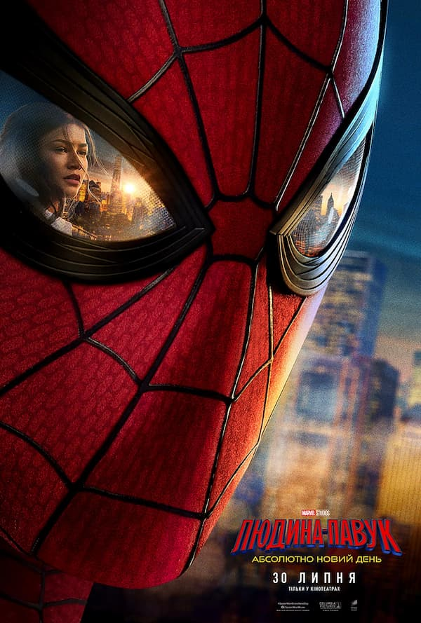

Spider-Man: Brand New Day

Опис
Spider-Man: Brand New Day – четверта самостійна стрічка про Людину-павука з Томом Голландом у ролі Пітера Паркера та частина кіновсесвіту MCU. Режисер фільму – Дестін Деніел Креттон, який раніше зняв Shang-Chi and the Legend of the Ten Rings, а три попередні фільми зняв Джон Воттс.
Дія відбувається через чотири роки після подій Spider-Man: No Way Home. Пітер Паркер живе самотньо й намагається бути супергероєм без чиєїсь підтримки, але нова небезпека змушує його знову вступити в боротьбу.
Прем'єра відбулася . Тривалість фільму – 145 хвилин, а в США він отримав вікову категорію PG-13.
Характеристики
- Тип
- Фільм
- Жанр
- Бойовик
- Прем'єра
- Тривалість
- 145 хв
- Переглянуто
- Так
Порівняння з попередніми фільмами
| Фільм | Рік виходу | Режисер | Тривалість |
|---|---|---|---|
| Spider-Man: Homecoming | 2017 | Джон Воттс | 133 хв |
| Spider-Man: Far From Home | 2019 | Джон Воттс | 129 хв |
| Spider-Man: No Way Home | 2021 | Джон Воттс | 148 хв |
| Spider-Man: Brand New Day | 2026 | Дестін Деніел Креттон | 145 хв |